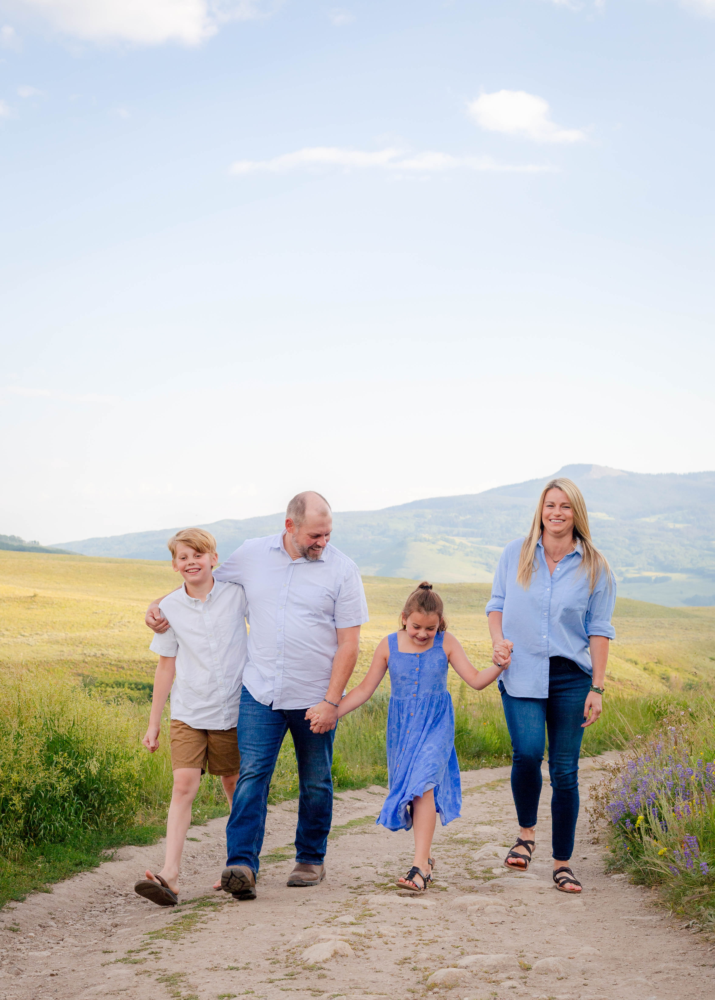
 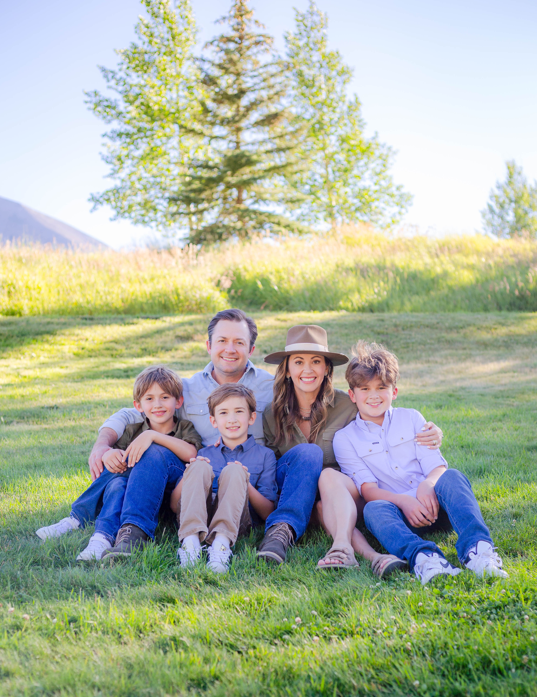
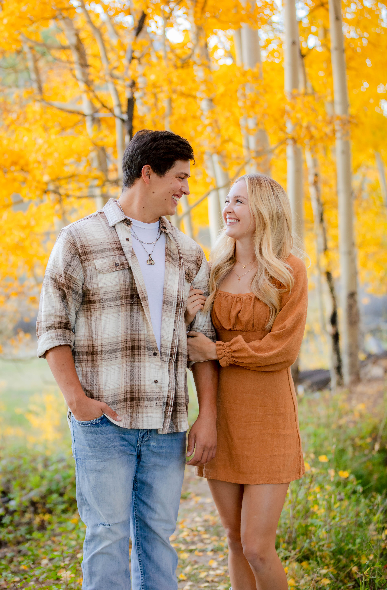
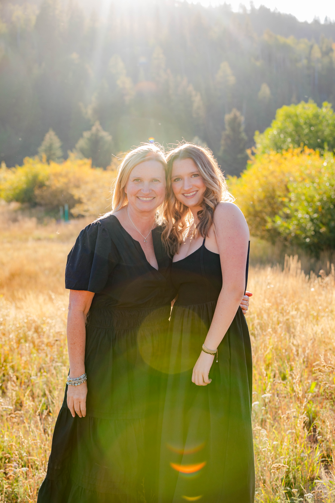
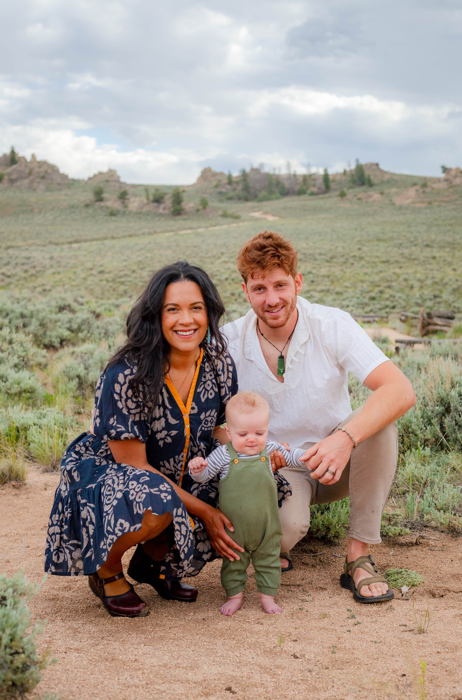
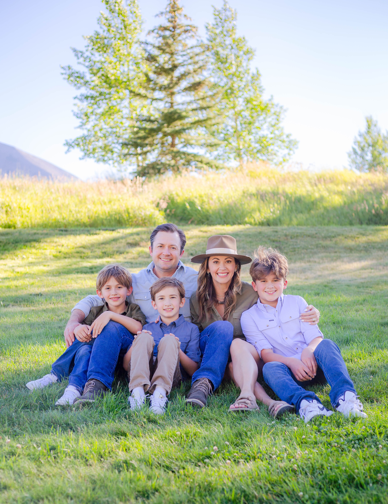
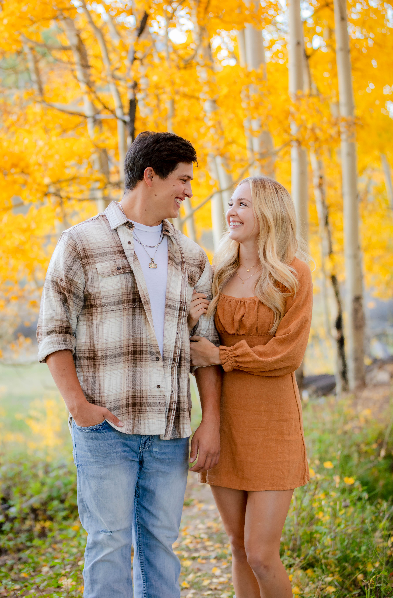
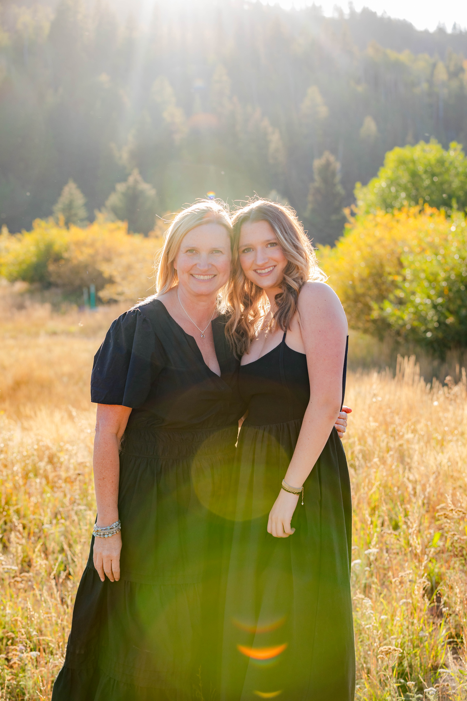
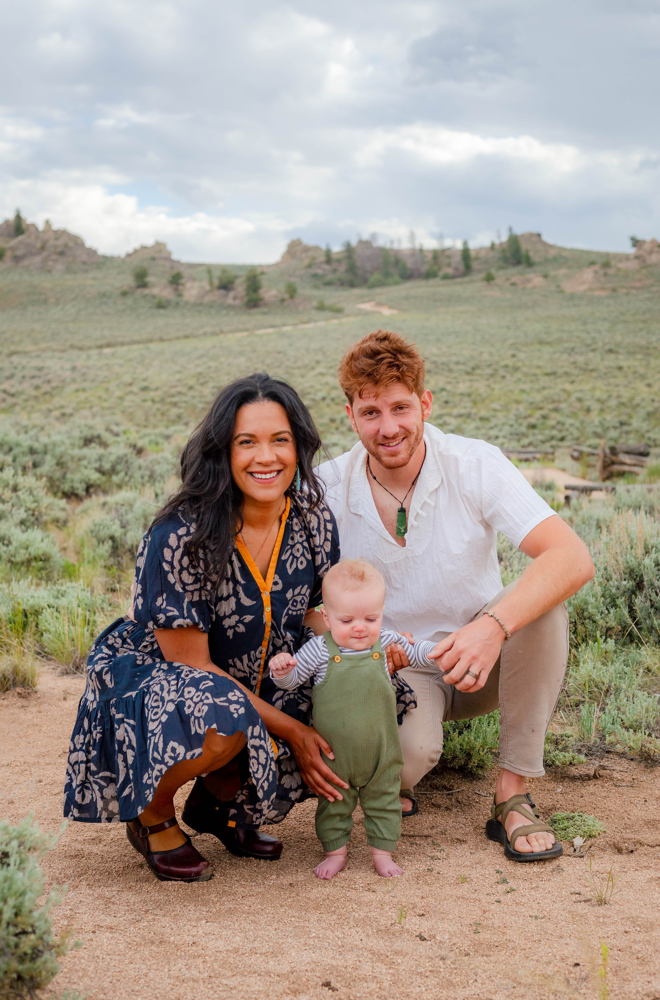
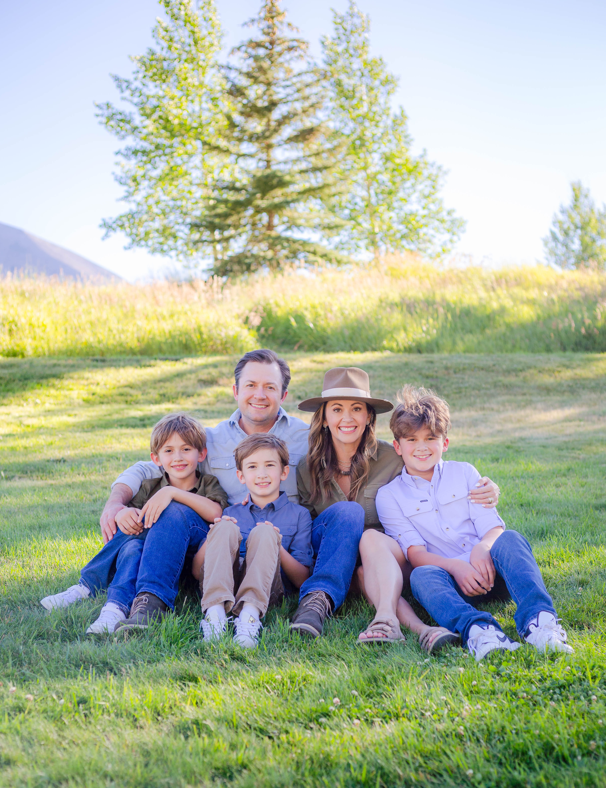
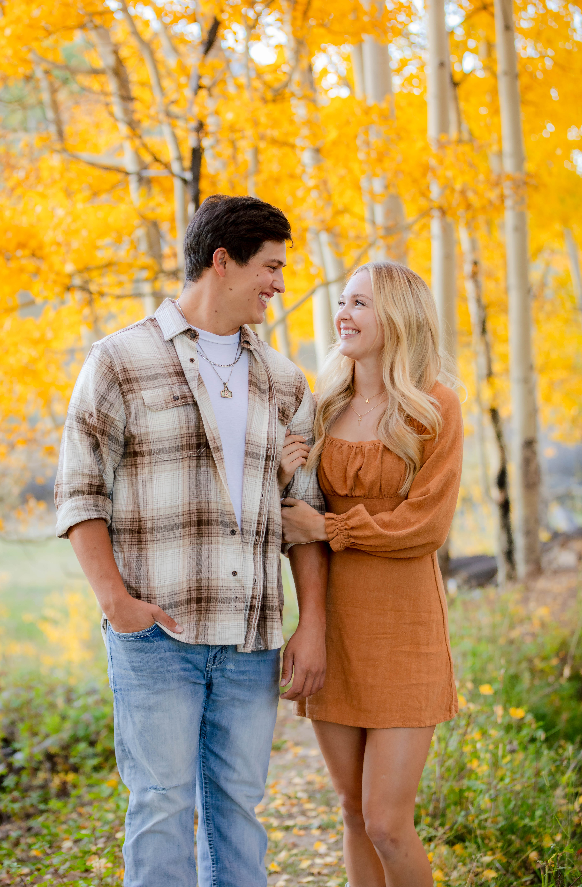
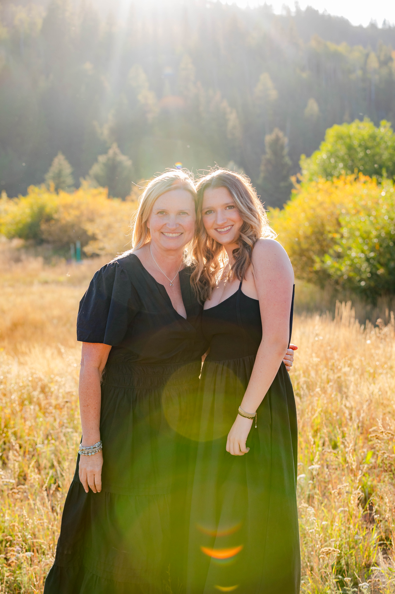
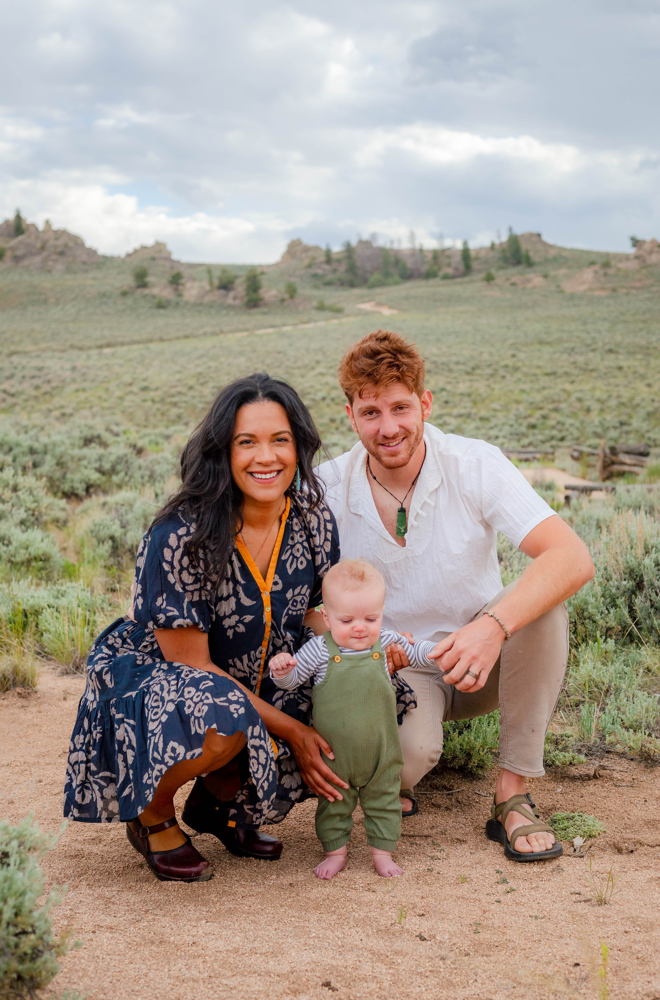
Capturing moments in Gunnison, Crested Butte, Pitkin, and Eagle Valley
My passion for photography began during my time working with my university’s marketing team. It was there that I discovered the profound beauty in capturing the essence of individuals in the places they call home. I realized how powerful it is to freeze moments in time—preserving not just images, but memories of milestones, significant events, and the fleeting moments that shape our lives. Through photography, I found a way to help others hold onto these memories, allowing them to relive their most cherished moments for years to come.